本项目为长春市信息管理系统后台的完整设计交付，涵盖从设计规范制定、组件库搭建、B 端页面设计、数据可视化大屏到 C4D 三维可视化的全链路输出。
系统面向长春市民 APP 客户端，提供动态、实时、可视化的数据统计与后台风控能力。设计以简洁、干练为主，核心是提高效率，页面不需要过多装饰性视觉元素。
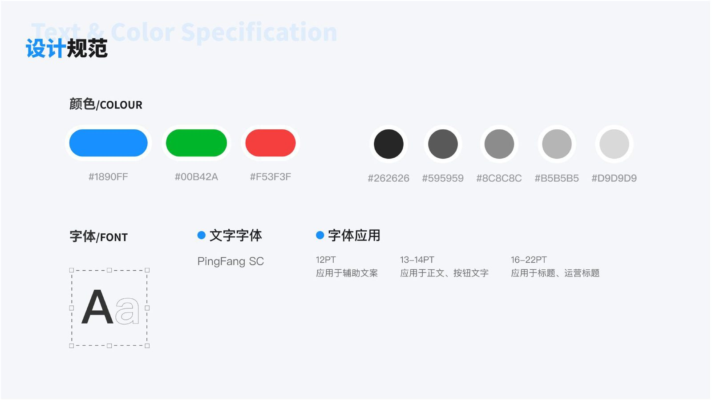
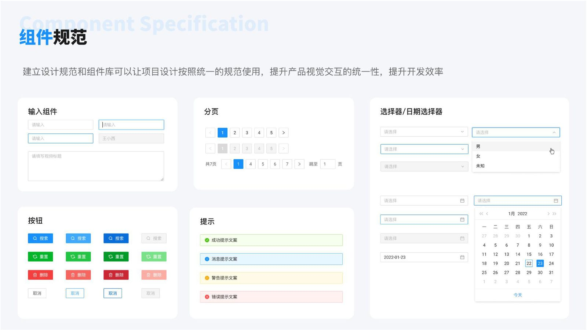
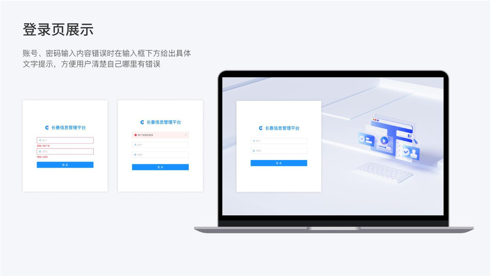
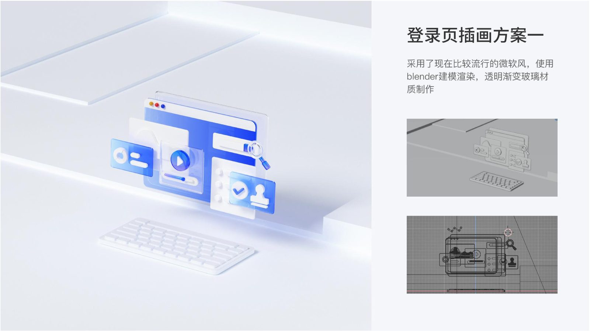
B 端页面设计以简洁、干练为主，核心是提高效率。包含数据总览、用户管理、权限配置、内容审核等核心模块。
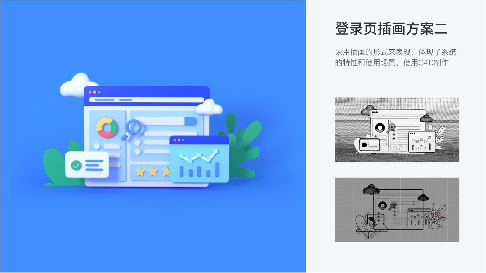
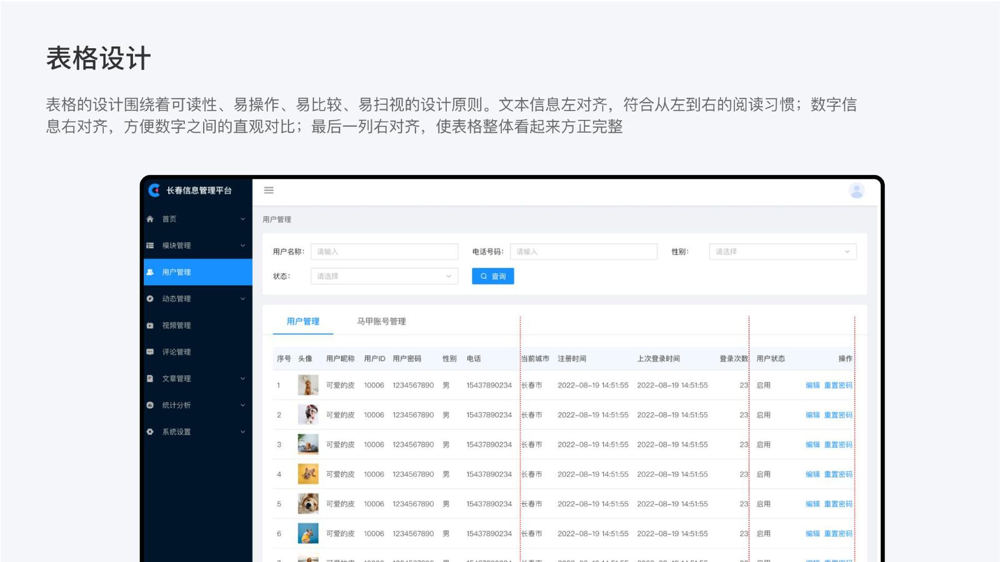
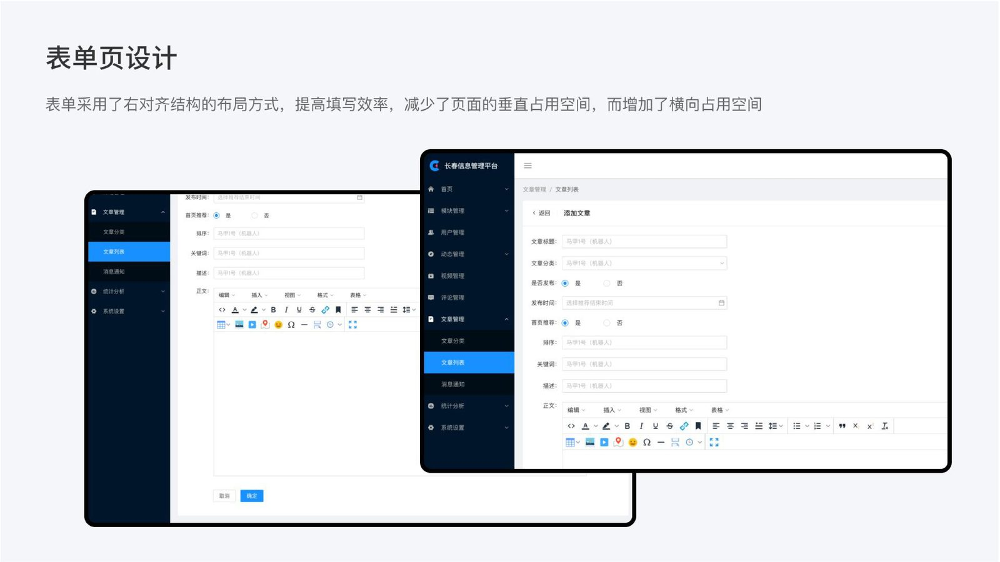
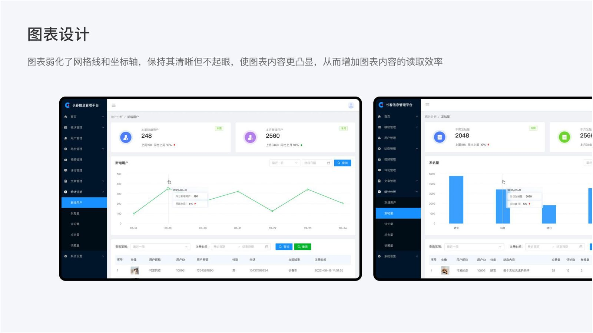
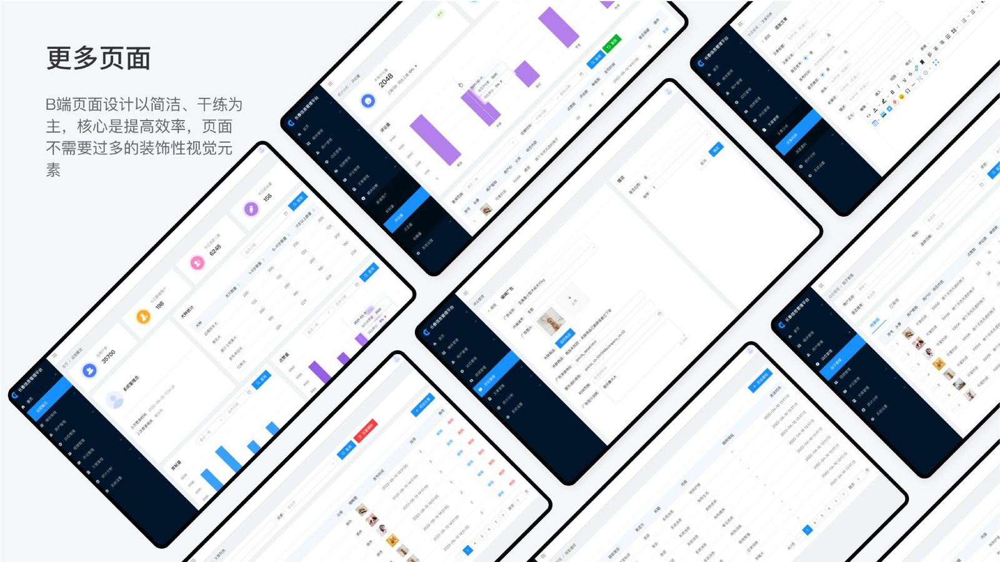
针对杭州市犬类办证年审等数据的统计可视化设计。以图表和图形化的方式展示数据，使用户快速找到内在规律、发现问题。采用深色科技风视觉语言，融合地图、柱状图、折线图、饼图等多种图表类型。
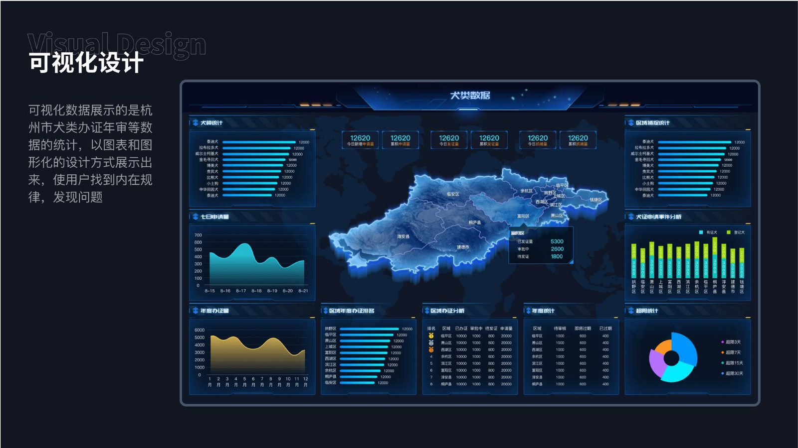
基于 **Cinema 4D** 打造的智慧工厂运营管控平台三维可视化方案。通过 3D 建模 + 实时数据驱动，呈现能耗监控、水质排放、生产区状态等多维度信息，实现「数字孪生」级的可视化监控体验。
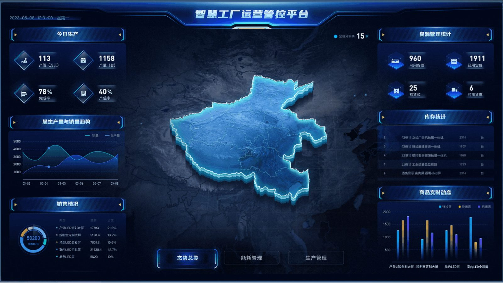
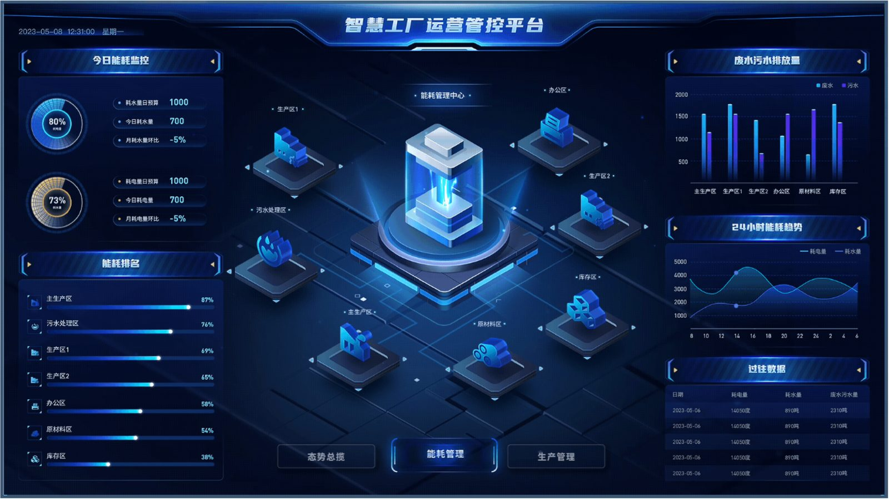